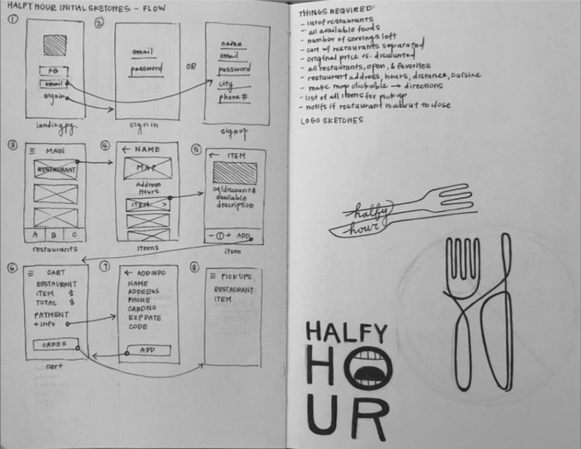
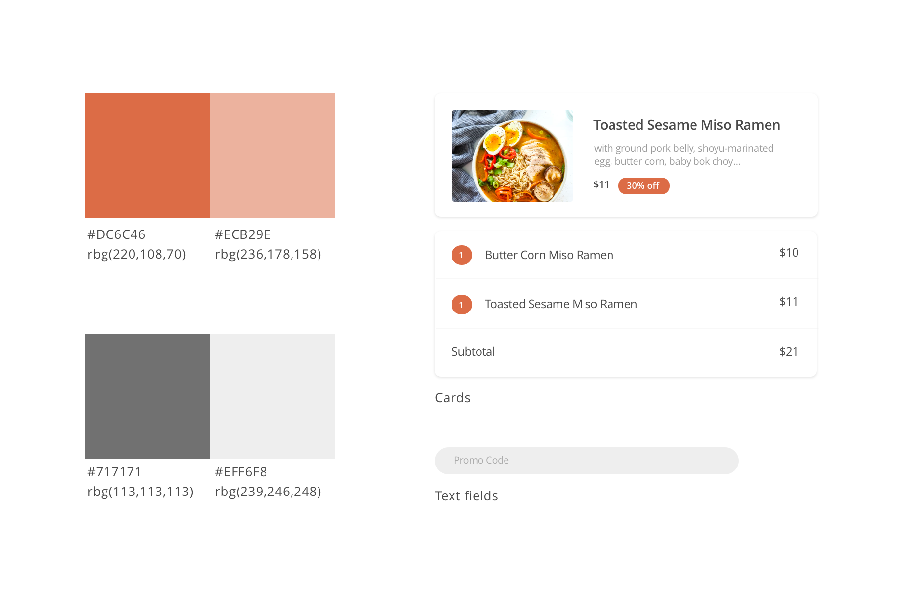

Halfy Hour
Role: Lead designer, Brand
Team: Viktor Sinzig, Natalia Flechsig
Tools: Adobe XD CC, Illustrator
How might we redesign Halfy Hour's mobile experience to help establish the business across campus?
Halfy Hour is a Berkeley based startup that built a mobile app which offers deals at local restaurants.
Halfy Hour's business model is built off of partnering with restaurants to advertise their brand to thousands of people nearby. Restaurants see increased traffic while providing great deals to customers. Users place orders through the app and go to the restaurant in person for pick up.
I conducted usability tests with 15 college students.
I created a research plan and conducted research studies with 15 UC Berkeley students. I asked them to perform certain tasks and followed up with questions such as "is this what you expected would happen with this interaction". The following points below list my main takeaways from these studies.
1. Unintuitive flows for adding an item to the cart
When quantity of items is incremented from 0 to 1, the item is automatically sent to the cart; yet, the user is still prompted to “Add to Cart.” “Add to Cart” option still available even if 0 items have been selected
2. Inconsistent styling
Buttons vary in style — some are not clearly indicated to be buttons. Text alignment varies as well. Without a cohesive style and layout, the app does not look professional, and users tend not to trust it. Trust is vital when asking for credit credit card information.
3. Rebrand with color palette and visual design language
Hot pink theme received consensus vote that it’s a rather distasteful choice. Does not agree with the goal of winning over the user’s trust. Rebrand with color choices and logo. Execs would like to continue with red tones.
I researched other companies with similar services. My main take aways were:
1. These apps have slightly different flows since they are food delivery services, while Halfy Hour is just a discount service and users have to go to the restaurant to pick up their own food.
2. If you order food from more than one restaurant, you have to pay separately for them.

I completed 2 iterations of sketches. I began with a simplified flow and expanded after syncing with the founders of Halfy Hour.
Browse restaurants and menus.
On the restaurants page, Halfy Hour allows users to filter searches with a tabbed interaction, which can be toggled with swiping motions. The searchbar enables more specific and targeted browsing. Cards were my UI element of choice to optimize screen real estate for best visual communication of name, cuisine, preparation time, and an image for each restaurant.
Similarly, on the menu page, cards were a tool for conveying independent sets of information. They are effective in highlighting restaurant information as well as organizing information about dishes, both grouping them together through visual similarity and maintaining clarity with margins and spacing.
Additionally, the dish page utilizes center justification to balance the image heavy interface with a brief description. The centered axis draws the user's eyes from the image to the action button, calling the user to add a dish to their cart.
Place orders and check order status.
I chose to use an interaction that resembles a recipe card for the cart interface. It can be enabled with a tap of the cart icon or a swiping up motion. It is important to display what items the user still needs to pick up. The difference between this app and other food apps is that users need to physically go to the restaurant to retreive their order. Thus, it's important to have an indicator that makes this difference explicit on the app itself.
User flow

I created a consistent design language to establish a professional voice and build trust with our users.
Halfy Hour was acquired by Kiwi in Fall 2017. I assisted in the transfer of design assets, and Kiwi in currently in another round of fundraising.
Before Halfy Hour's acquiry, I would have liked to design a dashboard for different locations when Halfy Hour expands to San Fransisco. As of then, it only encompassed restaurants based out of Berkeley simply due to the capacity of the startup. However, an easy to use toggle between cities is crucial for future growth.
It was a pleasure working with Viktor and his team. And it was an incredible honor to get to contribute to their product as my first large design project.
Working at such a young company, quick design sprints and lots of iterative design were crucial to our growth and success. As sole designer on the team, I guided several remote work sessions with contracted remote developers until the designs we had envisioned were met. This experience helped me learn to verbalize the importance of user experience design.
Use dark mode